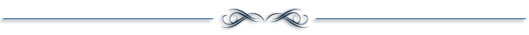

Hello Everyone!

My name is Nahida Naznin, nickname Nishat.Organized and diligent, I am capable of managing a large and varied workload, meeting deadlines and using my initiative to handle difficult situations. Have gained experience to work in a challenging environment and eagerly want to utilize my technical skill.
Mymensingh
I was born in Mymensingh and raised by parents, whom I love dearly. Came to the Dhaka for education when I was about 18 years old.
Programmer
My favorite programming language is Python and Java due to its speed and high-level syntax. I have done a few projects using Java, C,Python. Occasionally, I use Python to write simple scripts for myself and sometimes during coding practice. Sometimes I write websites for myself using HTML, CSS, Basic Javascript, php, SQL, etc. My programming tools are Bash, Jupyter notebook, inside of a terminal on my Linux based Pc. In a Windows environment, I use Sublime to code. For projects, I like to use Github for code sharing and program development.


Acting
At the age of 10, I learned to acting. I did acting with my friends in high school.
Sports
During my junior year in high school, I started playing Carrom Board with my friends and later joined the school Carrom Board team. I love playing Carrom Board and spending my time playing by Carrom Board.
Other than Carrom Board, I also enjoy playing football, cycaling and many other sports.
Games
Like many people, I like playing games. I especially like playing video games, board games.
Coding
During my free time, I enjoy spending my time practicing my programming skills. Sometimes I go on coding websites such as Uri, Hackerrank, Uva and solve problems to sharpen my skills.